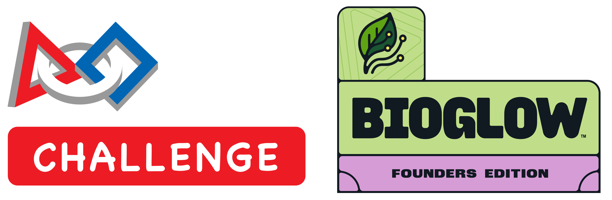

CrypticButterflies Season Kickoff
2026-27

Season’s Theme
Biodiversity keeps our planet healthy. In the rainforest, from the tiniest insects to towering trees, there are countless plant and animal species depending on one another to survive.
Innovation Project Prompt
This season, your challenge is to identify a
problem that puts biodiversity at risk and
design an innovative solution that can help.
Team Setup
- Split the team into two groups - Innovation Project & Robot
- Each group will be lead for their area
- They will be also be involved in the other group’s work
Talk to your child what they are most interested in
Innovation Project Leads
Need two parents to lead and guide the team
- Research and find experts
- Help kids do the outreach and setup meetings
- Coach kids to ask the right questions when talking to experts
- Lead the weekly meeting
Team Meetings
- The whole team will meet on Sundays for 2 hours (Time: TBD)
- Each group will also try to meet during the week separately
Team Meetings
Sunday meetings will focus on sharing progress with each other and cross-pollinate knowledge
- The innovation project group will work on missions and propose ideas for the lead group to take on
- The robot group will discuss ideas on the innovation project
- Atleast 1 parent lead from Innovation needs to be present
Learnings From Last Season
- Meet with multiple experts early in the season to get ideas
- Share the project and collect feedback from a wider audience
- Don’t shy away from using AI - everyone’s doing it
- Start preparing slides sooner
- Designate a team member to keep a journal of each week’s progress
Co-Coach, Volunteers & Mentors
- Need atlast 1 parent from each family be fully certified to volunteer at events
- Complete the requirements from FIRST
- Fingerprinting and complete the mandatory trainings
- Co-coach has additional training requirements
Last season we nearly missed early registration
Youth Mentor(s)
- Tarun is going to help out as a Youth Mentor this season
- Other older siblings are welcome to join and earn some leadership credit to put on their resume
- There could be some trainings to complete to be a youth mentor
Season Timelines
- Qualifying Tournaments are expected to be in the first 3 weekends in November
- I will be out from Oct 21st to Nov 7th
- We should try and be fully ready by early October
- The table will be available for the team to meet and practice
We should target the second weekend in November for Qualifying tournament
Looking ahead beyond this season
- Lego and FIRST have split and this is the last season of FLL
- There is no clear vision yet for next season
- As such this will likely be the last season at this level for this team
- We need to put our best effort this season and make the most of it
Team Behavior
- Last season, keeping the kids focussed was a big challenge
- There was a lot of cross-talk and chatter that was distracting to the kids who were trying to work
- Kids want to have fun but they need to focus
Expectation
Please talk to your kids and set expecations
- When working together, focus on the task and avoid bringing up random conversations or side conversations
- If you are unable to contribute, thats Ok, but do not be a distraction
- Don’t keep asking “is the class over?” - this is not a class but rather a club. You are welcome to leave anytime
Snacks and Water
- We will try and have some snacks for Sunday meetings
- If you are planning to send snacks, co-ordinate in advance, so we know
- Have them carry their bottle of water to reduce water break disruptions